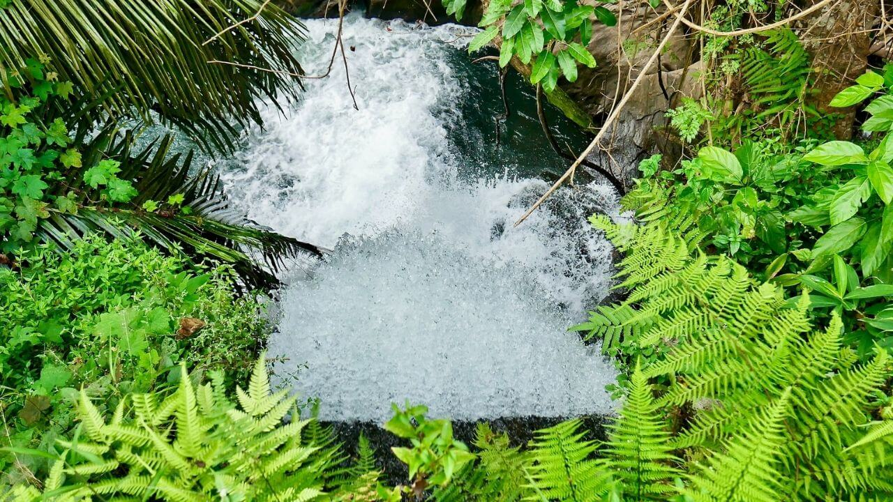
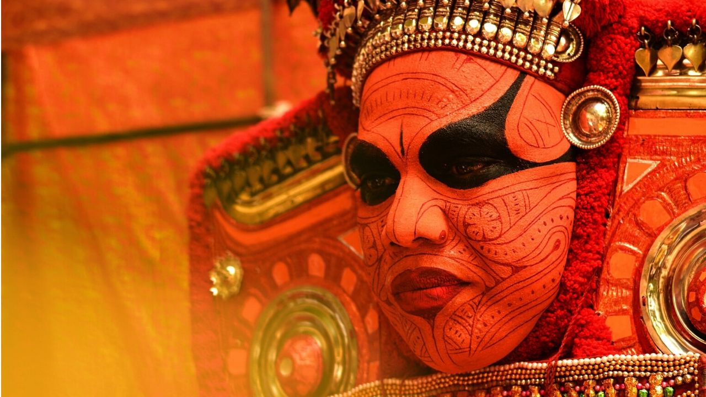

Travel into the world of hidden natural wonders, glorious historyTravel into the world of hidden natural wonders, glorious history, glamorous traditions, aromatic ayurvedic spas and an unforgettable culinary experience.. Kerala, a small beautiful state situated in the southwest corner of India is one of the most popular tourist destinations in the country. Kerala has 14 districts with Thiruvananthapuram (Trivandrum) as the capital city which is situated in the southwestern coast of Kerala.
Kerala the beautiful green land took birth on 1 November 1956. According to Hindu mythology Parasurama the sixth incarnation of Mahavishnu created Kerala. Initially Kerala was made up of three distinct areas Malabar, Cochin and Travancore. Archaeologists believe that the first citizens of Kerala were the Negrito people, the hunters.
